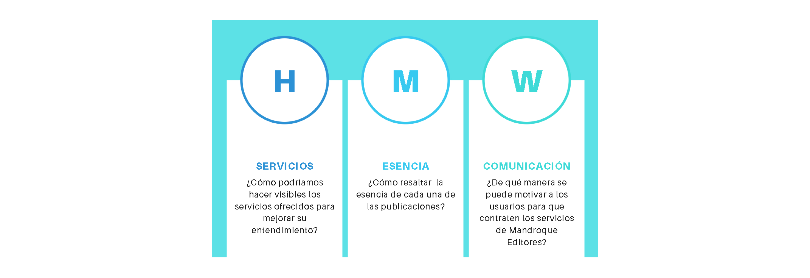

Mandroque Editores
Resumen
- Categoría: Rediseño de sitio web
- Cliente: Mandroque Editores
- Fecha: Junio, 2020
- Prototipo: www.mandroque.com
Producto: Prototipo web navegable en Figma/Zeplin. Objetivo: Conseguir que los potenciales clientes se comuniquen para solicitar los servicios de la editorial. Logro: Diseño usable que enfatiza los valores de Mandroque para generar mayor confianza en los usuarios.
Reto
Realizar una investigación profunda de los usuarios de la editorial y diseñar una plataforma digital que le permita a los usuarios solicitar los servicios del cliente.
PROCESS
HUMAN CENTER DESIGN
Research
Screener survey
Benchmark
Entrevistas
Scope Canvas
Definition
Empathy Map
Affinity Map
User Persona
Journey
Insight
HMW
Ideation
Sketch
Brain Storming
Site Map
User Flow
Prototype
Wireframes
Mockup
Prototipado alta fidelidad
Testing
Pruebas de usabilidad
DESCUBRIMIENTO E INVESTIGACIÓN
Mandroque Editores, es una editorial enfocada en desarrollar proyectos editoriales. Se fundó en el 2018 en Lima, Perú. Sin embargo, por la coyuntura actual provocada por el COVID 19, el negocio editorial se ha visto fuertemente perjudicado. Se viró el modelo de negocio de libros impresos a proyectos digitales. Por tanto, para conocer el impacto de esta situación se realizó una investigación del sector editorial y se trabajo en conjunto con el cliente un Scope Canvas para identificar las principales necesidades y metas de Mandroque.
Entrevistas
Se realizó 4 entrevistas al público objetivo, personas que se dediquen a brindar discursos y tengan audiencia, y descubrimos que:

SÍNTESIS Y DEFINICIÓN
Después de realizar las entrevistas, sintetizamos la información, analizando los hallazgos obtenidos. Creamos un user persona, descubrimos el Insight y formulamos los How Might We:
IDEACIÓN
Luego de definir los requerimientos, se estableció el diagrama de flujo de la app y los wireframes para las vistas a rediseñar.
PROTOTIPADO Y TESTEO
Después de testear los wireframes, se inició con el diseño en alta fidelidad y testeamos los nuevos cambios con 5 potenciales clientes nuevos para probar la funcionalidad de las implementaciones y los resultados fueron los siguientes: